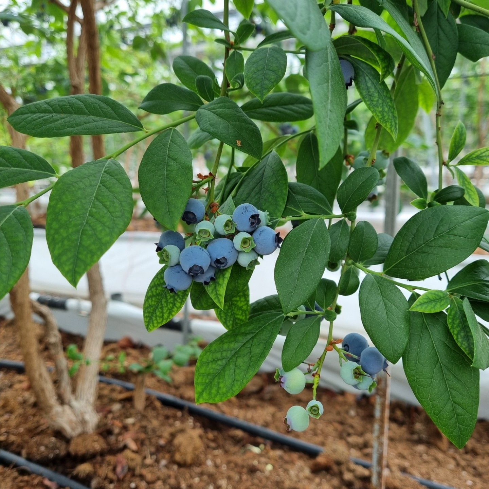
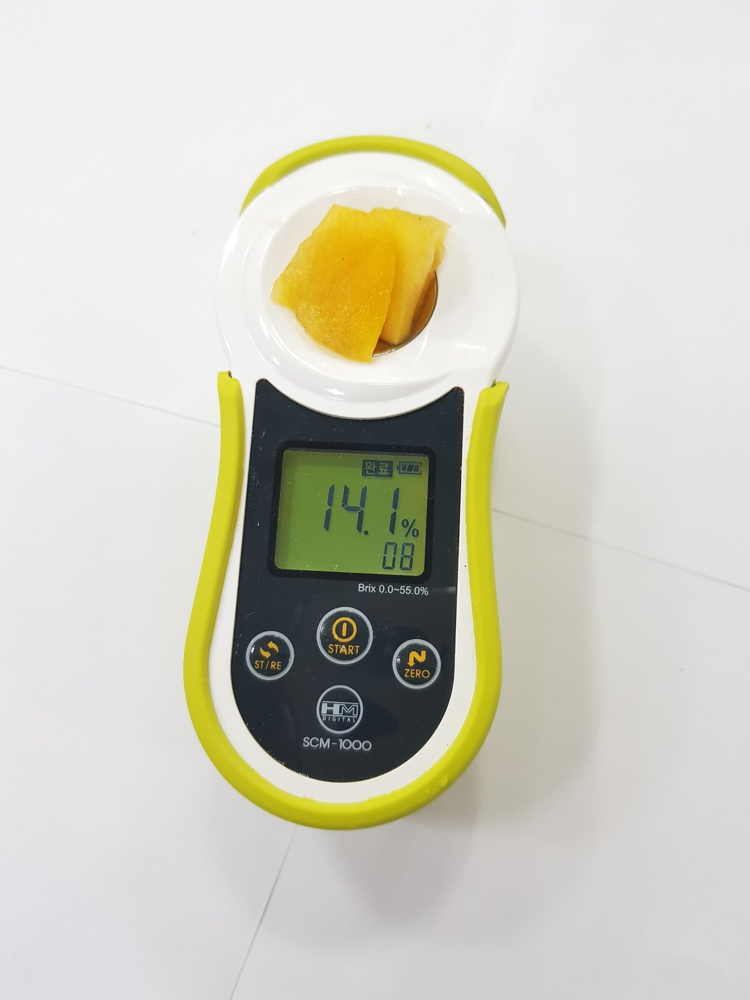

과일 사업
정성껏 기르고,
정성껏 기르고,
수확 너머의 가치를 만듭니다.
블루베리와 복숭아 재배의 경험을 신선 농산물 유통과 과일 가공 제품으로 연결합니다.

블루베리
처음부터 직접 기르는 과일.
화순에서 블루베리를 재배하고 수확·선별까지 관리합니다. 생과로 공급하며 동결건조 블루베리칩과 분말 등 가공 제품에도 활용합니다.
블루베리 제품
복숭아
설아복숭아와 골든복숭아.
화순과 이천의 농장을 기반으로 설아복숭아와 골든복숭아를 선보입니다. 수확·출하 일정은 품종과 재배 환경에 따라 달라집니다.
복숭아 제품군은 동결건조 과일칩과 분말로도 이어집니다.
복숭아 제품

과일 가공
더 넓어지는 과일 제품군.
자사 블루베리·복숭아 원물에 매입한 딸기·감귤 원물을 더합니다. 동결건조와 분쇄를 통해 보관과 활용이 편리한 과일칩·분말로 선보입니다.
과일 제품 살펴보기